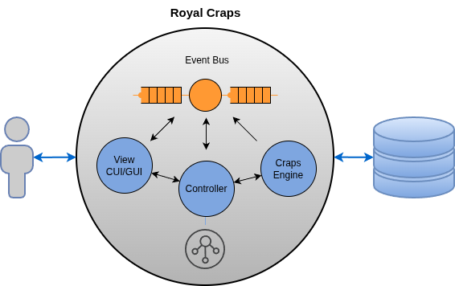
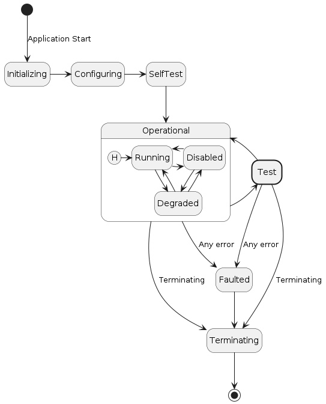
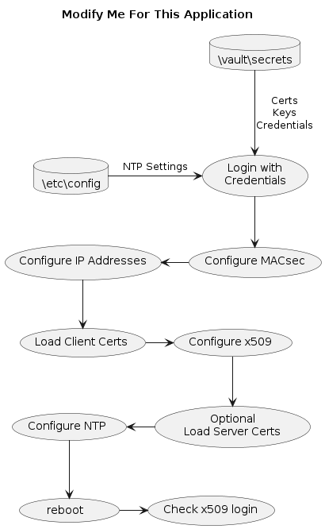
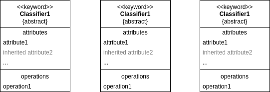

Design of Royal Craps
This document describes the design of Royal Craps version 0.1.0.
Royal Craps is a single-player Craps game. It offers these features:
Line, Odds, Place, Field, and Proposition Bets
Automatic Odds
Quick Bets
Play with Up to Five Computer Buddies
On-Screen Dice Roll Animation
Dice Roll history
Dice Stats
Player Stats Current Session
Player Stats Across All Sessions
Table Stats Current Session
Table Stats All Sessions
Terminal Based UI (future GUI)
This document is primarily for developers maintaining the application itself, however, other interested developers and engineers may find it useful.
User Story
As a user of Royal Craps, I want to:
TBS
TBS
TBS
Design Goals
Important application design goals and constraints:
Goal 1
Goal 2
Application Context
Instructions
In this section describe the application’s view of its processing context. Create or modify the following diagram to agree with your app. Then eliminate this admonition from the design-doc.rst file.
The Royal Craps design is a single process application with multiple threads written specifically for Linux. C++ is the language choice.
The following figure shows Royal Craps’s view of its processing environment.

Figure: Application Context Diagram
The design conforms the Model/View/Controller design paradigm. There is the CUI and GUI making up the View, the Controller, and the Craps Engine making up the Model. Implementation-wise, we have:
Model -
lib-crapsView -
lib-cui/lib-guiController -
lib-controller
There is no database, just a bunch of persistent files. The application performs no networking.
Startup/Shutdown
Startup Behavior
Royal Craps must bring the user straight into a working game, with no configuration steps, on a fresh installation and on every start after. Packaged files are read-only and shared, so everything the game writes (players, tables, preferences, what was last played) lives in the user’s own directories and is created from the packaged defaults when missing.
Directory Layout
The layout follows the XDG Base Directory conventions. Each $XDG_*
variable, when set, replaces the default shown.
Directory |
Access |
Contents |
|---|---|---|
|
read-only |
Packaged files: |
|
read/write |
|
|
read/write |
|
|
read/write |
|
The configuration is resolved in layers, each overriding the one before:
built-in defaults, the files (packaged sys-config.yaml, then the
user’s config.yaml), environment variables, and finally the command
line. The directories themselves can be overridden
with --sys-config-dir, --usr-config-dir, --usr-data-dir and
--usr-state-dir. Pointing the user directories at a scratch location
gives a genuine first startup every time, which is how first startup is
tested; pointing them at the packaged files is how development runs
from a source tree.
Logging During Startup
The log file is in the user state directory, which is not known until configuration is resolved, yet startup itself needs to log. The logger therefore holds messages in memory (and still echoes them to the console) until it is given its file, then writes them to the file ahead of everything else with their original timestamps. If startup fails before then, the held messages have already appeared on the console. Debug and trace messages are only kept once those levels are known, so the earliest messages are informational, warnings and errors.
First Startup
First startup is detected by the absence of the user’s config.yaml.
The same population work also runs if the user’s players.yaml or
tables.yaml is missing, so a user who deletes their data directory
gets a working game back rather than an error.
Royal Craps performs the following steps:
Creates the user directories.
Copies the packaged files into the user directories. A file is copied only if it does not already exist there, so existing players and their statistics are never overwritten. Each file is copied to a temporary name and renamed into place. These include:
player
unnamed.yaml.packaged buddy player YAML files.
packaged table YAML files.
the
players.yamlandtables.yamlmanifests.
Copies
default-config.yamlto the user’sconfig.yaml. This is done last, so an interrupted first startup is simply repeated on the next start.The delivered
config.yamlsays nothing about the table or players, so the packaged defaults insys-config.yamlapply: tablelas-vegas-strip.yaml, user playerunnamed.yamland two buddy players.The delivered
unnamed.yamlspecifies a starting bank of $10,000.Royal Craps continues start up as normal.
Game begins with full screen ScreenCrapsTable.
If the user player’s name is
unnamedthen a message reminds the user to change the name. Until the main screen has a message area this is an acknowledged dialog.
Subsequent Startups
Reads
config.yamlfrom the user’s config directory.Reads
state.yamlfrom the user’s state directory, if there is one.Decides the table and players as described in Choosing the Table and Players.
Loads the user player, the table and the other players from the user’s data directory.
Game begins with full screen ScreenCrapsTable.
If the user player’s name is
unnamedthen the same reminder is shown.
At quit, after the table and players are saved, the table, the user
player and the other players seated at the table are written to
state.yaml.
Choosing the Table and Players
Three sources can say which table and players to start with, in this
order of authority: what the user wrote in config.yaml, what the
last game left in state.yaml, and the packaged defaults in
sys-config.yaml. The user’s config.yaml always wins;
state.yaml only fills in what it leaves out. Each setting is
decided on its own.
|
Meaning |
|---|---|
|
Always start at this table. If absent, the last table, else the packaged default. |
|
Always start as this player, whoever the user played last time. If absent, the last user player, else the packaged default. |
|
|
|
A list of up to five buddy players to always start with. If
absent, the buddies of the last game, else the packaged default
buddies. Ignored when |
The packaged defaults are defaultTable, defaultUserPlayer and
defaultBuddyPlayers in sys-config.yaml. They are separate keys
because a value present in sys-config.yaml under the names the user
uses could not be told apart from something the user wrote. A game that
was left with no buddies is remembered as having none; the default
buddies are only for when there is no state.yaml.
The game must always be able to start, so a file name that does not
exist in the user’s tables or players directory (a typing mistake, or a
player that was deleted) is skipped with a warning in the log and the
next source is tried; for buddies, just that one buddy is dropped. The
user player is never also a buddy. A state.yaml that cannot be read
is ignored, and deleting it is always safe.
The result is stored under the keys the rest of the game reads:
table.startTable, table.userIsPlayer and
table.startPlayers.
Note
Packaged files added by a later release (a new table or buddy) are not copied into an existing installation, and are not in the user’s manifests. A way to deliver them is not yet defined.
Player Configuration Options
At any time, the player can select Control -> Configure to perform
the following operations available from the Configure menu:
- Rename Player
Prompts for a new name and a brief player description.
Renames the currently active player to the new name.
The currently active player YAML file is renamed accordingly.
Game carries on. Screens are refreshed with new name.
- New Player
Prompts for the name and a brief player description.
Creates a new player YAML file.
Name must be unique among the player files.
Does not automatically switch to new player.
Consider option for UI to ask to switch to it immediately.
New player starts with these defaults:
Bank:
$10,000Empty stats and session history
- Choose Player
Displays a list of available players and prompts the player to select one.
Selecting the already current player is a No-op.
When switching players:
Clears current player active bets if any.
Saves the current player to YAML file.
Loads the selected player’s YAML file.
Game continues using the currently active table.
Threads
TBS
Memory Management
TBS
Global Data
TBS
GameEvents
State Management
TBS

Figure: State Diagram
Processing Flow
<Describe processing flow to agree with diagram>

Figure: Processing Flow
main.cpp
TBS
Persistence
TBS
CRC Cards
CRC cards is succinct methodology for object oriented designs where CRC stands for classes, responsibilities, and collaborations. CRC cards are used to discover, collect and document class information. Using CRC cards, each card represents a class and its properties, and is shown in its own paragraph. See Extreme Programming CRC Cards or wikipedia.
Each design section below presents their important classes using CRC cards.
Some sections will present a UML class as well. Something like these.

Figure: Static Class Diagram
Craps Engine
Players
TBS
Tables
TBS
Betting
TBS
Statistics
TBS
Controller
Interfaces
TBS
Event Handling
TBS
Undo of Bet Changes
Undo Purpose
A player can take back bet changes made since the last roll: a bet placed, a bet’s amount or odds changed, or a bet taken down. Undo is limited to bets. Settings, rolls and the state of the game are never undone.
Undo Participants
UndoBetis one recorded change that knows how to take itself back and how to describe that in words. Its subclasses areUndoBetAdded,UndoBetRemovedandUndoBetModifiedAmount.UndoGroupholds several as one step.UndoManageris a singleton holding a stack of steps for each player.EventHandlerrecords a step after every bet request that succeeds, answersReqUndoBetwithRspUndoBet, and clears the stacks when a roll is requested.PlayerandCrapsTableprovide the restore paths that undo uses:Player::restoreBet(),Player::restoreAmounts(), andCrapsTable::restoreBet()andCrapsTable::restoreBetAmounts().OperationManagerruns the Undo operation forMenuBetting.
Undo Recording Steps
The View knows nothing of the stack. The recording happens entirely in the Controller, so any View, and later any automation that goes through the same requests, is undoable the same way.
ReqMakeBetfor a spot with no bet recordsUndoBetAdded. For a spot that already has a bet the request changes the bet’s amount, which recordsUndoBetModifiedAmountif the amount really changed. AUndoBetModifiedAmountis built before the change, because it copies the bet’s state as it is then.ReqOddsBetrecordsUndoBetModifiedAmount, whether it sets, changes or takes down odds.ReqRemoveBetrecordsUndoBetRemoved. The stack keeps a shared pointer to the removed bet, which is what lets it be put back.A change that is refused records nothing.
Taking down several bets at once sends one request per bet. All but the first carry
undoJoinsPrevious, which makesUndoManagermerge the change into the step on top of the stack, wrapping that step in anUndoGroupfirst if it is not one already. The batch is then undone in one step, last removal first.
Undo Restore Paths
Undo does not run a change backward through the normal bet functions. The
change being undone was allowed, and undoing it can look like a change that
is not: reducing a PassLine bet after the point, increasing a
DontPass bet, or putting back a DontPass bet after the point. The
normal rules would refuse these.
The restore paths therefore skip the rules for making or changing a bet, and check only what must be true for undo to be safe: betting is open, the bet is on the table (or, for a restore, is not already there) and the player has the money. They go through the table, so the player’s wallet, the house bank, placement commission and the bet, balance and table events all update as for a normal change. Without those events the screens would not follow the undo. The bet’s original id is kept, so the screens treat a restored bet as the same bet.
A bet placed by the player is taken down the normal way by
UndoBetAdded, through Player::removeBet(), since that is what it is.
Undo Rules and Limits
Last in, first out. There is no random access and no redo.
Each player has a stack, and an undo request applies to its own player. The View asks for the user player. This keeps the bets of a buddy safe from the user’s undo, and a player who switches away and back keeps their steps.
The stacks are cleared when a roll is requested, because the roll decides the bets, when the table is switched, and when a buddy leaves the table. They are cleared before the roll, in the request handler, so the clearing is ordered with the bet requests and no timing between threads is involved.
Undo is refused while betting is closed. The refusal keeps the steps.
A failed undo drops that player’s whole history and reports the reason. The step that failed is no longer known to match the table, so undoing the steps below it would be unsafe. Nothing is changed by the failed step itself.
A mutex protects the stacks, since requests and tests may use them from different threads.
Undo Workflow
MenuBetting calls OperationManager::undoLastBet() for u. The
operation sends one ReqUndoBet for the user player and waits for the
RspUndoBet with the matching correlation id.
Success: the betting menus unwind to the table screen, as after any bet. The bet and balance events that the undo caused have already been sent, and redraw the player areas and the balances as they do for any bet change. The response carries a description such as “Took down your $10 Place 6 bet”, which is logged.
Failure: an error dialog shows the reason. Nothing to undo and betting closed are the common ones. After the player acknowledges it, the menus unwind.
Changes to a bet’s flags, such as a hardway being off, are not recorded,
because nothing changes those flags yet; the Bet Flags menu entry is
still a stub. The earlier UndoBetModifiedFlags class was removed
because it was never used and restored a bet by overwriting it, which skipped
the table and its events. When flag changes are implemented, they need their
own UndoBet subclass that restores through the table.
Configuration
Command Line
Configuration Files
Environment Vars
TBS
Console User Interface
TBS
OperationManager CRC Card
Purpose
OperationManager coordinates the lifecycle of multi-stage user operations in the CUI.
An operation represents a user-initiated task that may involve navigating a chain of menus, obtaining user confirmation, issuing an asynchronous request to the Craps Engine, processing the corresponding response, and presenting any resulting errors.
The manager maintains the state of the active operation and determines what action should occur as the operation progresses through its stages.
Although betting is a primary use case, OperationManager is not specific to betting. It supports any CUI operation that requires coordinated interaction across menus, dialogs, and asynchronous request/response events.
Use Cases
Making a bet
A player navigates through one or more betting menus to configure a bet. When the player has completed the required selections, the CUI issues a ReqMakeBet request event to the Craps Engine.
OperationManager tracks the operation, associates the request with its eventual response, and determines the next action based on the result.
Success: The betting menu chain is unwound, returning the player to the appropriate underlying screen.
Failure: An error dialog is presented. After the player acknowledges the error, the error dialog is dismissed and the betting menu chain is unwound or otherwise restored according to the intended interaction.
Quitting the game
When the player requests to quit, the CUI presents a DialogConfirmation. The manager associates the confirmation response with the pending quit operation.
Confirmed: The manager initiates the quit request by publishing the appropriate asynchronous request event.
Cancelled: The operation is abandoned, and the player returns to the preceding interface without issuing the quit request.
Other operations requiring confirmation or multi-stage interaction follow the same general pattern.
Responsibilities
Track the active operation. Maintain the identity, type, and current stage of the operation in progress.
Coordinate multi-stage workflows. Track progress through menu selection, confirmation, request submission, response processing, error acknowledgement, and completion as applicable.
Initiate asynchronous requests. Publish the appropriate request event when the operation reaches the stage at which the request should be issued. For example, publish
ReqMakeBetwhen a bet has been fully configured.Correlate requests and responses. Retain the correlation ID and any necessary operation context so that an incoming response event can be matched to the active request and operation.
Process operation results. Determine whether the response indicates success or failure and advance the operation accordingly.
Coordinate error handling. On failure, request presentation of the appropriate error dialog, retain the operation context while the dialog is active, and process the player’s acknowledgement.
Manage surface-stack transitions. Initiate the appropriate dismissal or unwinding of menus and dialogs when the operation succeeds, is cancelled, or finishes error handling. Leave actual surface-stack manipulation to
SurfaceManager.Handle confirmation outcomes. Associate confirmation responses with the operation that requested them and proceed according to the player’s decision.
Complete or cancel operations. Release the active operation’s state when its lifecycle has finished, ensuring that subsequent operations can begin.
Operating Constraints
One active operation at a time. The CUI may have at most one operation managed by
OperationManagerin progress. A new operation must not overwrite or interfere with an existing operation.Asynchronous request/response processing. Issuing a request does not imply that the operation has succeeded. The operation remains active until its result has been processed and any required follow-up interaction has completed.
Correlation-based response matching. A response must be associated with the request that produced it. Unmatched, stale, or unrelated responses must not advance or complete the active operation.
CUI thread ownership. All operation-state transitions and resulting CUI actions must respect the CUI’s thread-ownership rules. Incoming events from other threads must be routed to the CUI thread before they cause UI or operation-state changes.
Separation of responsibilities.
OperationManagercoordinates operations; menus collect choices; dialogs communicate information and collect confirmation or acknowledgement;SurfaceManagermanages the surface stack; and the Craps Engine executes game operations and reports their results.
Completion
An operation is complete when its intended outcome has been reached and all required user interaction and CUI cleanup have finished.
Depending on the operation, completion may follow a successful response, cancellation of a confirmation, or acknowledgement of an error.
Once complete, the manager releases the operation’s state and becomes available to coordinate the next operation.
Dice Roll Animation Synchronization
Roll Animation Purpose
The Craps Engine resolves a dice roll in a single synchronous burst: it picks the dice, evaluates every bet, updates balances and statistics, and publishes the resulting events, all within one call. The CUI, on the other hand, shows the dice tumbling on screen for a second or two. If the CUI simply handled each event as it arrived, bets would be cleared and balances would change while the dice were still in the air, and the player would see the outcome before the roll is known.
The CUI therefore holds back the results of a roll until the animation shows the dice landing, then reveals all of them together. The Craps Engine and the Controller know nothing about this. The synchronization lives entirely in the CUI.
Participants
CuiReceiversubscribes to the engine’s events and converts each into a work order placed on theCuiThreadqueue, in the order the engine published them.CuiThreadprocesses the queue on the CUI thread and hands every work order toWorkOrderDispatcher. Its loop also gives the dispatcher a regulartick().WorkOrderDispatcherdecides whether an event is handled now or held, and replays held events when released.WindowAnimationrenders the dice frames from a timer. It alone knows when the dice have landed.
Event Ordering
For one roll the engine publishes, in this order:
UslBettingClosedUslDiceThrowStartUslDiceNewValueThe results: bets resolved, bets removed or changed, balances, session and last-roll statistics, point established, seven out, new shooter, and
UslResolveBetsEndUslBettingOpened
Because the queue is first-in first-out, UslDiceThrowStart is always
handled before any of the results.
Holding and Releasing
Engine CuiThread / Dispatcher WindowAnimation
------ ---------------------- ---------------
ThrowStart ---> onDiceThrowStart() ----------> start frame timer
holding = true (frame every ~90 ms)
NewValue ---> dice to animation (now)
roll history, title bar (held)
results ---> queued, in order (held)
... frames ...
dice land
<-- ReleaseHeldEvents work order
replay held events in order
holding = false, one full redraw
While holding:
Held are the results of the roll: all bet, balance and statistics events, point and seven-out events, shooter changes, roster changes, and the roll history and title bar portions of
UslDiceNewValue.Not held are
UslDiceThrowStart, the animation’s own portion ofUslDiceNewValue(it must have the dice to draw them),UslBettingClosed, and everyRspresponse event. Responses answer requests the player made and must reachOperationManagerwithout delay.
Held events are stored as closures and replayed in their original order,
so each panel sees the same sequence of calls it would have seen without
holding. Panels need no knowledge of the mechanism. In particular, panels
that re-read the model after a roll, such as the player area when it
handles UslResolveBetsEnd, do so at release time and therefore never
show post-roll data early.
When WindowAnimation draws its final frame it enqueues a
ReleaseHeldEvents work order rather than calling the dispatcher
directly. The release is then handled like any other work order, in
sequence, on the CUI thread, so no locking is needed.
Rules
The animation always plays out. A key press does not skip or shorten it.
Safety net. If the animation never reports that the dice landed, the dispatcher’s
tick()releases the held events afterMaxHold(ten seconds) and logs a warning, so the screen cannot stay frozen.No animation, no hold.
WindowAnimation::onDiceThrowStart()returns whether the dice will be animated. If it returns false, nothing is held. The dice show immediately and results are handled as they arrive.
Animation Speed
The Animation Speed option on the Control, Configuration menu drives this
mechanism through two small functions in WindowAnimation. Both read
the setting from CrapsReaders::readAnimationSpeed() at each throw, so a
change applies to the next roll:
animationEnabled()is false for Off, so there is no animation and no hold.onDiceThrowStart()returns false and the dispatcher passes the roll’s results straight through.frameInterval()sets the timer period: 45 ms for Fast, 90 ms for Normal and 135 ms for Slow. The length of the animation scales with it.
Slow is about two seconds, well under MaxHold. If an animation can ever
become much slower than that, MaxHold must be raised to stay above the
longest animation.
The setting lives in the configuration as animation.speed. The session
layer, the highest priority, holds a choice made in the menu, which sends
ReqSetAnimationSpeed. Below it are the command line
(--animation-speed), config.yaml, and what state.yaml remembered.
At quit the session choice, or else the remembered value, is written back to
state.yaml under settings. A config.yaml value is never written
there, so removing it from config.yaml restores the remembered speed.
Roll History and Roll Log
Roll Log Purpose
Two parts of the CUI show past rolls: the one-line roll history under the title bar, and the Deep Roll History popup. Both need the same facts about each roll, including whether it was a seven out, a pass line winner or established a point, because those pick the roll’s color. The Craps Engine remembers the dice of recent rolls but not what each roll meant, and those facts arrive as separate events after the roll.
The CUI therefore keeps its own memory of rolls, RollLog, and both
displays draw from it.
Roll Log Participants
RollLogis a small singleton holdingRollEntryvalues, newest first. An entry has the two dice and three flags:sevenOut,passLineWinnerandpoint. It keeps at mostCapacityentries (120) and drops the oldest.WindowRollHistoryadds an entry for each new dice value, then marks the newest entry as the seven out, pass line winner and point events arrive. It formats and draws the entries in the format the person chose.DialogDeepRollHistoryis a fixed-size popup showing the whole log as 20 rows of 6 columns, newest at the top of the first column, reading down each column in turn. It always uses the most detailed format. It keeps nothing of its own and has no dependency on any menu: whatever offers it callsshow().
Roll Log Rules
The log is the View’s memory only. It holds what the CUI has seen since it started and is not saved. The engine’s own recent rolls are not used, because they carry no flags.
Entries are created and marked by the same work orders as every other roll result. They are therefore held and released with the dice animation (see Dice Roll Animation Synchronization), and the history never shows a roll before the dice have landed.
The marks apply to the newest entry only and do nothing when the log is empty.
Because the flags are stored per roll, changing the format redraws the entire history with its colors intact. Nothing has to be recomputed.
Capacityis the number of cells in the popup. It is a fixed constant, not a user setting. The engine’sTableManager::MaxRecentRollsis kept at the same value.
Roll History Format Setting
The format is a number from 1, the most compact, to 4, the most detailed:
7 8 6, 7,8,6, 7(34) 8(44) 6(33) and 7(3,4) 8(4,4) 6(3,3).
It follows the same path as the animation speed. The configuration key is
rollHistory.format. A choice made in the Control, Configure menu is sent
as ReqSetRollHistoryFormat and stored in the highest priority
configuration layer. The Controller answers with
UslRollHistoryFormatChanged, and the dispatcher redraws the screen. The
answer is needed because the request is handled on another thread, so
redrawing when the picker closes could happen before the new format is set.
WindowRollHistory reads the setting each time it draws. The choice is
remembered in state.yaml at quit unless config.yaml states it.
CuiMain CRC Card
TBS
ScreenCrapsTable CRC Card
TBS
Graphical User Interface
TBS
Physics engine
TBS
Library General
lib-gen is a C++ library providing general purpose cross cutting design elements that most any application can use.
Multi-Layer Configuration
TBS
Error Handling
TBS
Error Passing
Exceptions
ErrorDialogs

Figure: Error Sequence Diagram
EventManager
TBS
Logger
TBS
Timers
TBS
Security
TBS
Quality Attributes
This section identifies the quality attributes that are most important in this design. The first group of elements are considered the higher priority concerns for the design of this application.
Instructions
Modify this section appropriate for your application.
The following quality attributes are less of a concern in this design:
Collateral Design
Language
Implementation language is C++.
Building
Uses the standard project build architecture.
COTS
Links with COTS gRPC community library.
Packaging
Packaged as an RPM.
Automated Unit Testing
Classes are unit tested using the COTS doctest framework.
Automated Component Testing
TBS
Automated Integration Testing
TBS